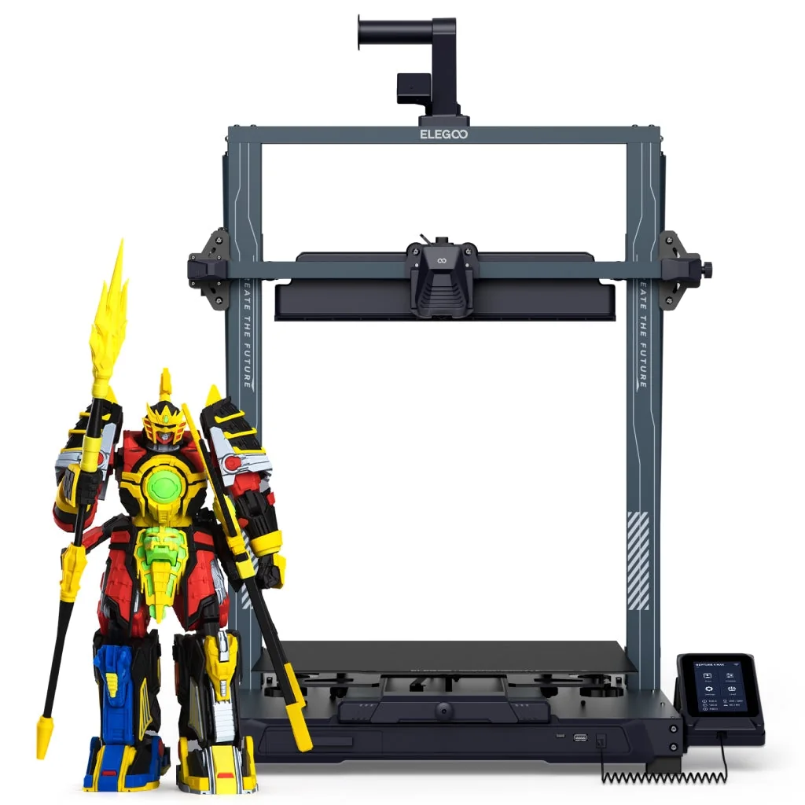

Build volume
420 x 420 x 480 mm; printing platform 430 x 430 mm
Advertised dimensions; check usable space and variants.
Sources & dates
- ELEGOO Neptune 4 Max product page (Specification table) · 2026-08 · vendor
420x420x480 mm bed-slinger, the largest Neptune, with an 85 C bed ceiling and acceleration capped at 8000 mm/s2.

420 x 420 x 480 mm; printing platform 430 x 430 mm
Advertised dimensions; check usable space and variants.
300 C claimed max nozzle temperature
Published limits; hardware and firmware limits may differ.
$389.00 on us.elegoo.com, Aug 2026, against a compare-at price of $559.99; Ribbon-Cable and Type-C printhead variants are the same price
Dated listing, not a live offer. Read the configuration and region.
Understand the hardware, explore compatible changes and find a diagnostic starting point when something goes wrong. Expand the specification sections for every recorded value, condition and original reference.
Dimensions, construction and the hardware that moves the print.
| Property and unit | Published value and conditions | Sources and dates |
|---|---|---|
| Manufacturer & exact marketed model name (verify the exact product identity first) | ELEGOO Neptune 4 Max | 1 source
|
| Release date (announcement and actual shipping) | Listed on the ELEGOO US store from 20 September 2023 (Shopify publish date) | 1 source |
| Street price (USD; dated snapshot per entry) | $389.00 on us.elegoo.com, Aug 2026, against a compare-at price of $559.99; Ribbon-Cable and Type-C printhead variants are the same price | 1 source |
| Variants & sibling models — and how to tell them apart (spec-contamination risk) | Largest Neptune 4. The trade-off against the smaller models is easy to miss: the bed only reaches 85 C (against 100 C on the Plus and 110 C on the base Neptune 4) and acceleration is capped at 8000 mm/s2 (against 12000 and 20000), because of the mass of a 430 x 430 mm moving bed. Two printhead variants, Ribbon-Cable and Type-C, are sold under one SKU | 4 sources
|
| Property and unit | Published value and conditions | Sources and dates |
|---|---|---|
| Build volume X×Y×Z (mm) — advertised vs actually usable | 420 x 420 x 480 mm; printing platform 430 x 430 mm | 1 source
|
| Machine footprint (mm) & clearance needed (cable/spool overhang) | 658 x 632 x 740 mm; ELEGOO's maximum size for machine activity is 658 x 950 x 960 mm including rack and tray - allow nearly a metre of depth and height | 1 source
|
| Net weight (kg) | 18.1 kg net, 21.8 kg gross | 1 source
|
| Frame construction & material | CNC-machined aluminium extrusion frame | 1 source
|
| Enclosure: open / enclosed; panel material; door/lid | Open frame, no enclosure | 1 source
|
| Property and unit | Published value and conditions | Sources and dates |
|---|---|---|
| Kinematics (bedslinger i3 / CoreXY / other) | Cartesian i3 bed-slinger | 1 source
|
| Z-axis: leadscrew count & type, sync mechanism, anti-backlash | Two lead screws with two tie rods | |
| Stepper drivers (exact model e.g. TMC2209; UART/SPI; sensorless homing?) | "Silent Drive (All Axes)"; no driver part number published |
| Property and unit | Published value and conditions | Sources and dates |
|---|---|---|
| Max print speed (claimed, mm/s) | 500 mm/s max toolhead speed (manufacturer claim) | 1 source
|
| Recommended/typical print speed | 250 mm/s recommended printing speed against the 500 mm/s ceiling (ELEGOO's own figure); default acceleration is 4000 mm/s2 | |
| Max acceleration (claimed, mm/s²) | 8000 mm/s2 max toolhead acceleration (manufacturer claim) - the lowest in the Neptune 4 family | 1 source
|
Extrusion, heating, leveling and material handling.
| Property and unit | Published value and conditions | Sources and dates |
|---|---|---|
| Type (direct drive / bowden) & design name | Dual-gear direct extruder with 2 fans |
The M3108 kit replaces the Neptune 4 Plus / 4 Max hotend with a matched heater/thermistor assembly and the FlowTech nozzle system, which permits cold nozzle changes. Follow the kit installation and recalibrate for the installed nozzle and filament.
Applies to: Original Neptune 4 Plus/Max; select M3108 rather than the shorter Neptune 4/Pro kit. New Plus+/Max+ revisions are not established here.
| Property and unit | Published value and conditions | Sources and dates |
|---|---|---|
| Hotend design (proprietary/standard; quick-swap mechanism?) | Brass nozzle, 0.4 mm, with a titanium-alloy heat break | |
| Max nozzle temp claimed AND firmware max temp limit (both values) | 300 C claimed max nozzle temperature | 1 source
|
| Property and unit | Published value and conditions | Sources and dates |
|---|---|---|
| Max bed temp claimed AND firmware limit | 85 C max heated bed temperature at 25 C ambient - well below the 100-110 C of the smaller Neptunes, which limits ABS/ASA work despite them being on the compatibility list | 1 source
|
| Bed surface (material, texture, coating), single/double-sided | PEI spring steel sheet, now upgraded to a dual-sided textured PEI + PLA-specific surface; platform 430 x 430 mm |
For an offset that remains too high or low after leveling, ELEGOO checks axis play, wheel preload, brass-nut screws, gantry parallelism and proximity-switch position. It also includes bed preheating because thermal drift can change the result.
Applies to: Original Neptune 4 Max; follow its bed and probe geometry. This is not proof that a firmware replacement is needed.
| Property and unit | Published value and conditions | Sources and dates |
|---|---|---|
| Auto bed leveling: probe technology (inductive / strain gauge / load cell / touch probe) | Manual levelling combined with 121-point auto-levelling |
| Property and unit | Published value and conditions | Sources and dates |
|---|---|---|
| Filament runout sensor (type, location) | Filament detection and power-loss resume printing | 1 source
|
| Property and unit | Published value and conditions | Sources and dates |
|---|---|---|
| Officially supported filament list | PLA, TPU, PETG, ABS, ASA, Nylon - but note the 85 C bed ceiling against ABS and ASA | 1 source
|
Firmware, controls, connections and calibration.
| Property and unit | Published value and conditions | Sources and dates |
|---|---|---|
| Mainboard model & MCU (exact chip markings if teardowns exist) | "Klipper High-Speed Quiet Motherboard" is all ELEGOO publishes | |
| Input voltage (110/220 V, switch or auto) | 100-120 V / 220-240 V, 50/60 Hz | 2 sources |
| Total rated power draw | 320 W rated power, 24 V output |
OpenNept4une replaces the factory software with an updatable Armbian and Klipper stack and supplies printer configurations and calibration tools. Back up the original eMMC image and configuration before following the installation guide.
Applies to: Original Neptune 4 Max; choose its exact board/model image. New Plus+ and Max+ revisions require separate confirmation; stock update packages are not interchangeable.
| Property and unit | Published value and conditions | Sources and dates |
|---|---|---|
| Firmware base & current version (Klipper fork / Marlin fork / proprietary) | Klipper |
| Property and unit | Published value and conditions | Sources and dates |
|---|---|---|
| Display: size, type, touch? | 4.3-inch colour capacitive touch screen | |
| On-device UI capabilities (model preview, per-object controls, etc.) | Colour capacitive touch UI; ElegooSlicer recommended, Orca and Cura supported | |
| WiFi (band/standard), Ethernet, USB ports, SD/flash-drive | Wi-Fi, USB and WLAN file transfer | 1 source
|
Published safeguards, support terms and independent evidence.
| Property and unit | Published value and conditions | Sources and dates |
|---|---|---|
| Noise: claimed dB and independently measured dB (distance/method) | Operating sound published as 65 dB or less - a manufacturer figure with no distance or method stated |
| Property and unit | Published value and conditions | Sources and dates |
|---|---|---|
| Warranty length & support reputation (evidence, not vibes) | 12 months on brand-new machines and parts, but ELEGOO's own table excludes a long list of parts from that: PEI plate / build plate / nozzle kit / PTFE tube / heater / thermistor / hot end / packaging / manual / tools carry no warranty at all, and the extruder, extruder kit and printhead kit get 6 months. Certified pre-owned machines carry no warranty | 1 source
|
This guide presents the catalog’s sourced record for this exact model. Source dates belong to each reference; a page update does not mean every specification has been rechecked.
Prices are dated listing snapshots, with configuration, regional and sale conditions. They are not current offers. Unknown values remain unfilled.
Firmware, variants and available accessories can change. Read the original reference before making a purchase or planning a process.
Firmware, modifications and troubleshooting links are checked against the model and stated hardware or firmware revision. A creator’s compatibility claim is not a fit test by this site. Official troubleshooting describes a diagnostic route; individual reports do not establish a failure rate.
This review did not verify printable modifications for this exact model. That is a research gap, not a claim that none exist.